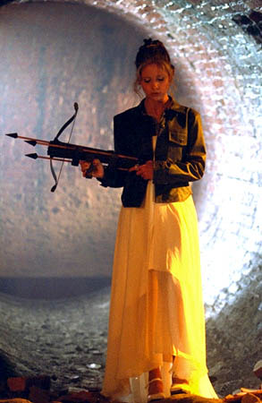

So, you're here to get the skinny are you? I will try and keep it simple and not dive into my rather boring past. I feel weird writing this stuff down. However, when I visit someone else's homepage I always go directly to the "personal info" section. I find it fascinating to read some of the nitty gritty on someone who lives hundreds and sometimes thousands of miles from me. So here it goes!
I was born in Sault Ste. Marie, Ontario, Canada on December 26, 1973. I have a 13 year old brother named Chris and a 29 year old sister named Heather. My sister married Terry Hodgson in 1995; they recently had a baby boy named Cody, making me an Uncle!!! I'll be attending Sir Sanford Fleming College in January 1998 for a post-graduate GIS program, having recently finished my degree at Saint Mary's University. Don't know what a GIS is? Click here for a brief explanation!
Family Photos (Click to enlarge)
I am currently a bicycle mechanic and manager at Slickrock Cycle. We specialize in high-end mountain bikes like Mongoose and Rocky Mountain. I've been racing for three years, recently placing 5th in the Senior Expert category at the National Championships!
I'm a bit of a sports nut—snowboarding, rockclimbing, skiing, and motocross. I even tried bungee jumping once (don't attach it to your ankles the first time!). I also love music, from Radiohead to Emm Gryner. My music is vital to my well-being.
My favourite T.V. shows include Seinfeld, South Park, and Buffy The Vampire Slayer. Click Buffy below to visit my fan page!
I'm also a huge Anne Rice fan. The Vampire Lestat has returned! Check the latest news here.
{kind=link}
{kind=link}
{kind=link}
{kind=link}
{kind=link}
{kind=link}